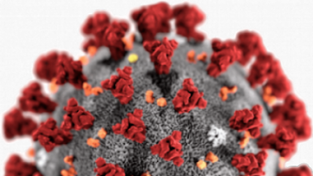

 Inicialmente chamada de 2019-n-CoV, a infecção provocada pelo novo coronavírus recebeu o nome oficial de covid-19, em 11 de fevereiro: um acrônimo do termo “doença por corona vírus” em inglês (corona virus deceased 2019). “Estamos assistindo à ciência em formação. As coisas mudam a cada dia: não só os números da epidemia, mas todos os aspectos. Tudo é muito novo para todos nós”, observa o infectologista Estevão Portela, vice-diretor de Serviços Clínicos do Instituto Nacional de Infectologia Evandro Chagas (INI/Fiocruz), que recebeu caso suspeito de ebola em 2015 e receberá casos do novo coronavírus, se o vírus chegar ao país.
Os coronavírus, diz ele, são uma causa conhecida de infecção respiratória. Em geral, provocam um resfriado leve; até as últimas décadas, raramente geravam doenças mais graves em humanos. “O que vem acontecendo desde o início deste milênio é um ‘salto de espécies’, ou seja, o vírus salta de uma espécie animal em que é parasita habitual para a espécie humana”, explica Estevão. A partir de 2002, conta, surgiram três novos coronavírus — Sars (que causa síndrome respiratória aguda grave) em 2002, Mers (síndrome respiratória do Oriente Médio) em 2012 e covid em 2019.
A suspeita é de que o morcego esteja na base de todos esses saltos, normalmente ligado a outro animal intermediário — no caso da Sars, o pangolim (semelhante a um tatu), no da Mers, o dromedário. Ainda se busca entender se houve um hospedeiro intermediário no covid. Tudo leva ao mercado de peixes e animais exóticos de Wuhan, já que grande parte dos primeiros infectados esteve no local. Segundo o Centro de Controle e Prevenção de Doenças da China, foram coletadas 33 amostras na zona oeste do mercado, principalmente onde ficam as barracas de animais selvagens, e 31 testaram positivo para o coronavírus.